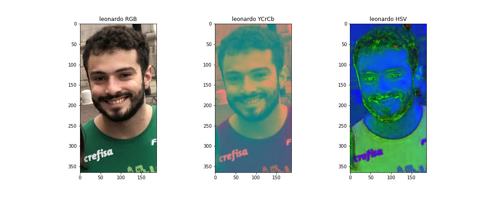
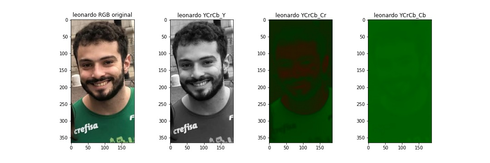

Objetivos:
- Codificação de Imagens por transformada DCT;
- Iniciação à Animação com o Blender.
INSTRUÇÕES:
- Com uma imagem de cada integrante do grupo e com a foto-montagem de todos os do grupo:
- Separa os canais e re-arranja para formar imagem RGB
- Imprime cores trocadas (BGR) e reais (RGB)
- Converte para os formatos YCrCb e HSV
- Separação das Camadas RGB individualmente
- Separação dos Canais YCbCr
- Com cada uma das fotos dos integrantes do grupo e para a foto-montagem do grupo todo faça a compressão de imagens com perdas;
- Leia o tamanho dos arquivos (em bytes) e faça uma tabela comparando os tamanhos originais e os comprimidos e calcule a porcentagem de compressão de cada arquivo destes tamanhos na tabela construída;
- Calcule a DCT em bloco de 8x8 da imagem;
- Zere manualmente da diagonal da DCT (e duas acima) as componentes AC;
- Compare e comente as imagens do bloco original e reconstruída.
- Fazer uma animação feita em Blender com a melhoria da iluminação sugerida.
Fotos em BGR e RGB dos integrantes do grupo e da foto-montagem
Resolução da foto em BGR de cada integrante do grupo, bem como da foto-montagem:
- Resolução para daniel : 262 x 337 PIXELS. 3 camadas.
- Resolução para felipe : 1199 x 1184 PIXELS. 3 camadas.
- Resolução para rodrigo : 99 x 198 PIXELS. 3 camadas.
- Resolução para leonardo : 187 x 365 PIXELS. 3 camadas.
- Resolução para group_photo : 1280 x 1280 PIXELS. 3 camadas.
- Resolução para beatriz : 613 x 848 PIXELS. 3 camadas.

Fotos em RGB, YCrCb e HSV dos integrantes do grupo e da foto-montagem

Camada R, G e B das fotos dos integrantes do grupo e da foto-montagem
Canais YCbCr Y, Cr e Cb das fotos dos integrantes do grupo e da foto-montagem

Compressão das fotos dos integrantes do grupo e da foto-montagem
Tabela comparando tamanho dos arquivos
DCT - Zera diagonal principal

DCT - Zera diagonal principal + 2